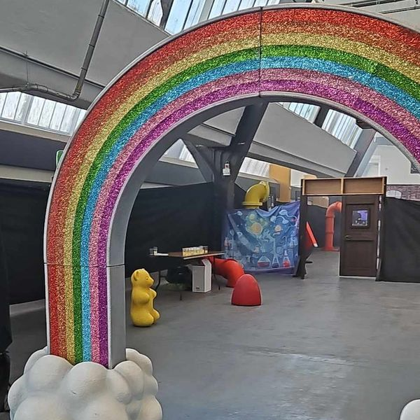
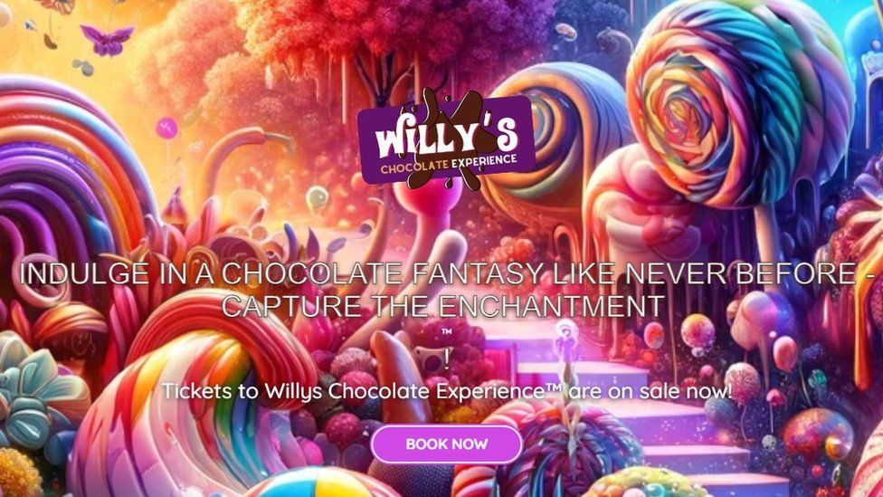
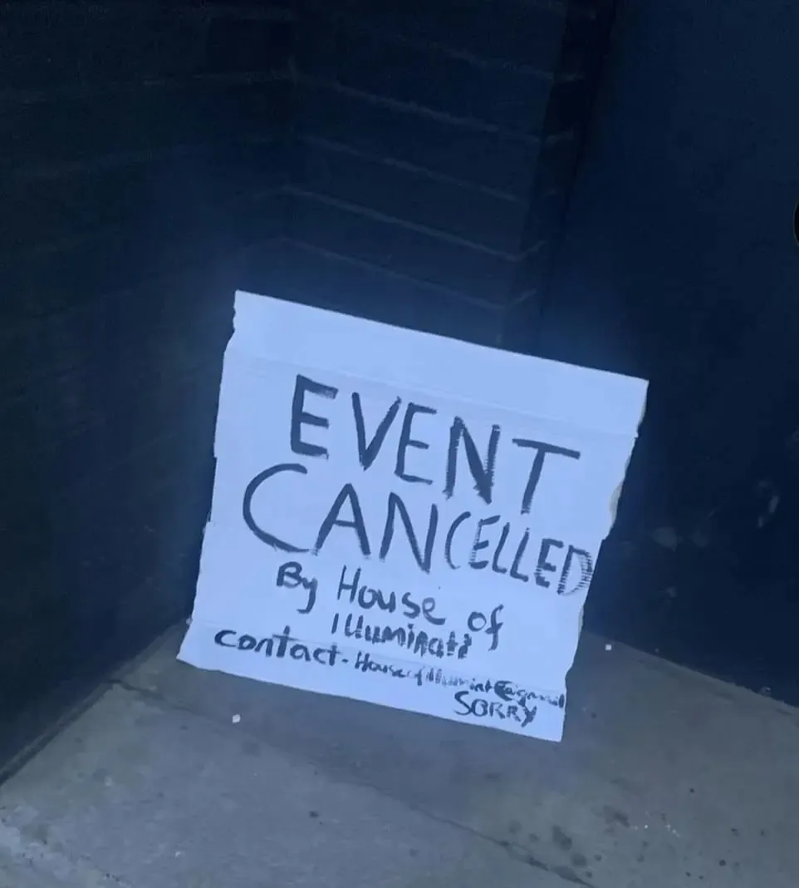

On the 24th of February, families eager to enter a Willy Wonka themed experience which offered them, “delectable” treats, such as that of a chocolate fountain, and “Whimsical” Oompa Loompas, all for the tooth rotting price of £35. For these family's however, they would be faced with a brutal reality as the entered a sparse Glasgow warehouse, in which their dreams would be shattered. The delectable treats they would be offered would be a small portion of jellybeans and a whopping quarter of a can of Barrs limeade. The Oompa Loompas would end up not to be the budding factory workers, but instead unpaid actors, subcontracted by Illuminati, who were as furious as the disappointed customers and approached their work thusly. In defence of the staff, they had just been swindled, I think we all would be quite angry as well.

Shown is a picture of the experience (Courtesy of father of 3, Stuart Sinclair) The complaints listed by the parents were endless, from the imagination lab, being an underwhelming experiment with a slightly bored looking underpaid assistant, to ‘a journey filled enchanting surprises at every turn.’ Would end up being quite disappointing, although the miniature bouncy castle would be a nice touch, it would be described as something akin to “an abandoned, empty warehouse.” The event was advertised to take 45 minutes to walk through, however many families ended up completing it in under 5 minutes. This is due to the lacklustre, thinly spread decorations, which were few and far between. The event even created its own characters, such as the unknown, from what the scripts read, is an opposing chocolate maker.
The company behind the event, House of Illuminati, have apologised for the disappointing event and would issue an apology, “We planned a fabulous event and it just did not take shape as planned and for that we are truly sorry, we are devastated at how this has turned out and understand people’s anger and frustration that everyone has had, refunds have already started being issued and the rest should be over the coming days, again we are truly sorry to everyone.”. As of the 26th, no refunds have been issued, however the company did say the process could take 10 business days, so we are still to wait. The company would cancel the event in the anger that preceded, however the company also admits they should have “Cancelled first thing this morning instead,” according to a company spokesperson.
One must ask, to what extent was the house of illuminati responsible for this not so sweet conspiracy. To begin, the advertising did not match the pictures of the event. Eva Stuarts description of the advertising sums it up best “It was basically advertised as this big, massive Willy Wonka experience with optical illusions and big chocolate fountains and sweets.” However, this was clearly not the case. This is for two main reasons, firstly, according yet again to Eva Stuart, the actors had been told to abandon the scripts they had, last minute, and they were forced to improvise. This resulted in them wasting months of their time. Secondly, the company claims to have been let down last minute, however, this does not seem to the case, or at least it was not the case the day before, where the house of illuminati would describe the event saying, “It's all coming along nicely.” This statement completely contradicts the dumpster fire that families would arrive to, maybe something went wrong withing those 24 hours, this cannot be ruled out, however this seems unlikely, and one has to ask, if things went so drastically wrong, 24 hours before the event, why didn't they cancel it, instead of presenting families with a terrible event.

Event advertising material The event would be organised by Billy Coull, a controversial figure in the event scene, he would first sour his name in 2021, in which he would host a Santas grotto in Pollock, after all the toys and sweets were donated, he would cancel the event. However, Billy's confession that “We used artificial intelligence to create some images for the event,”. It would soon be realised that AI had been utilised for more than just some images. His scripts for the actors had one actor complain that they felt AI scripted, and having read it, I would agree. One thing the script most certainly does not have however is a bad reaction from the audience. Billy has also written multiple books using AI, one of these books is Antivax (Other books by him head into much darker themes, if you are interested, but I warn you, you are leaving our universe and going into some dark fictions with a mass of debunked conspiracies and misinformation) with one online reviewer stating in their amazon review as “absolute nonsense” full of “Gibberish sentences” with “All the hallmarks of being written by AI”. The rolling stones would also report that he would co direct a Glasgow foodbank, which would supposedly feed thousands a month, however, seems to have mysteriously had its online presence vanish, this fraud goes hand in hand with his fraudulent university degrees.

Photo provided by Suzan Menzies. The public reception was negative, children were reported to be bawling at the sheer disappointment, and many childhood dreams had most certainly been put down, Mother Aileen Butcher would describe the reaction of families as follows. “Some families very, very angry and had little children who were crying” What we do know, is that nobody won the golden ticket. Parents were divided in their anger. Father of 3, Stuart Sinclair would take the disappointment to what he saw in a more comedic way,” It was so bad, it was laughable”. His family's reaction was similar “My little girl was a bit disappointed, but the boys just laughed it off because of how bad it was.” It seems to that millions internationally have been entertained by this debacle, with it being reported on internationally. Not bad Glasgow.
So bad in fact, Police Scotland received a 999 call at the event, in which officers would give advice to the angry mob. Glasgow city councils trading standards depart would receive complaints about the event along with the police. For anyone effected by this, please contact the event coordinator.